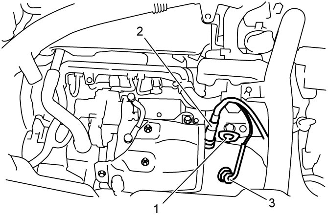
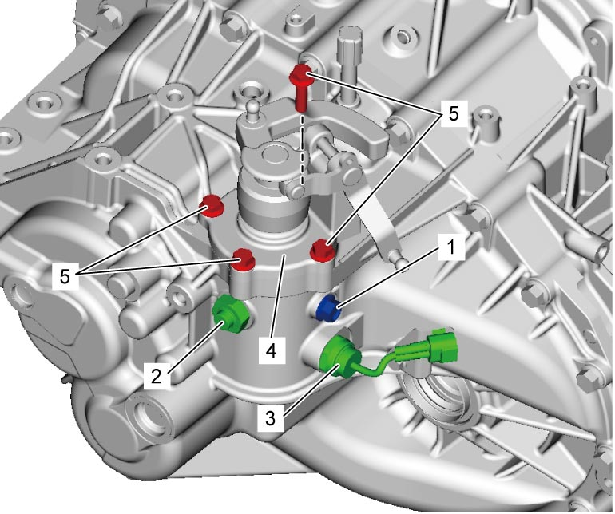
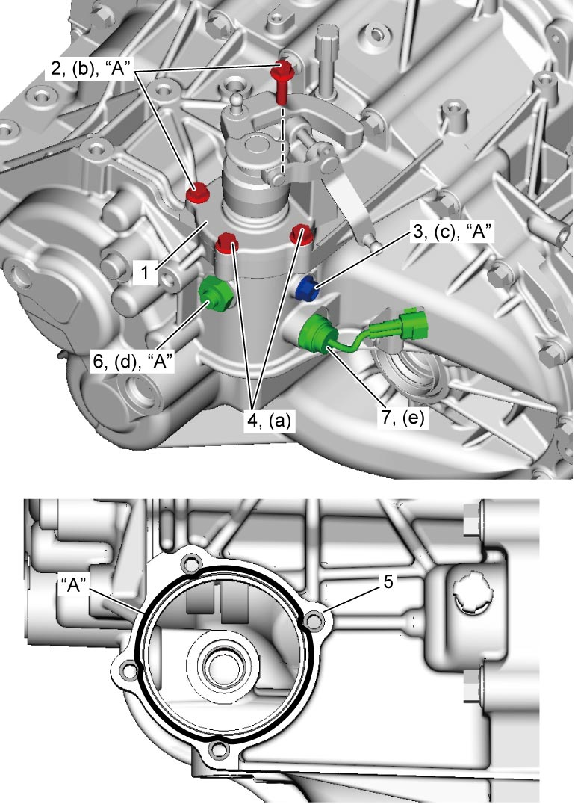

5B
| Gear Shift and Select Shaft Assembly Removal and Installation |
Removal
1)Remove battery and tray. 
2)Support transaxle using chain hoist or engine crane.

NOTICE:
When lifting engine assembly using chain hoist or the like with engine hook (1), chain or hook may interfere with A/F sensor-1 (2) and EGT sensor-1 (3) including their harnesses and damage them.
Before lifting engine assembly using chain hoist, remove A/F sensor-1 and EGT sensor-1.

 "Expand image")
3)Remove engine left mounting, No.1 bracket and No.2 bracket.
4)Disconnect gear shift and gear select control cables from transaxle.
5)Remove gear shift interlock bolt (1).
6)Remove gear shift locating spring (2), if equipped.
7)Remove neutral position switch (3), if equipped.
8)Remove gear shift & select shaft assembly (4) by removing bolts (5).

 "Expand image")
Installation
1)Clean mating surfaces of guide case (1) and left case (5), apply sealant to left case as shown in figure by such amount that its section is 1.5 mm (0.059 in.) in diameter, and mate guide case with left case.
2)Apply sealant to thread of guide case No.2 bolts (2), and then tighten guide case No.1 bolts (4) and guide case No.2 bolts to specified torque.
3)Apply sealant to thread of gear shift interlock bolt (3), and then tighten gear shift interlock bolt to specified torque.
4)Apply sealant to thread of gear shift locating spring (6), and then tighten gear shift locating spring to specified torque, if equipped.
5)Tighten new neutral position switch (7) to specified torque, if equipped.

 "Expand image")
6)Connect gear shift and gear select control cables to transaxle.
7)Install engine left mounting, No.1 bracket and No.2 bracket.
8)Remove chain hoist from engine assembly.
9)Install air cleaner assembly.
10)Check input shaft for rotation in each gear position.